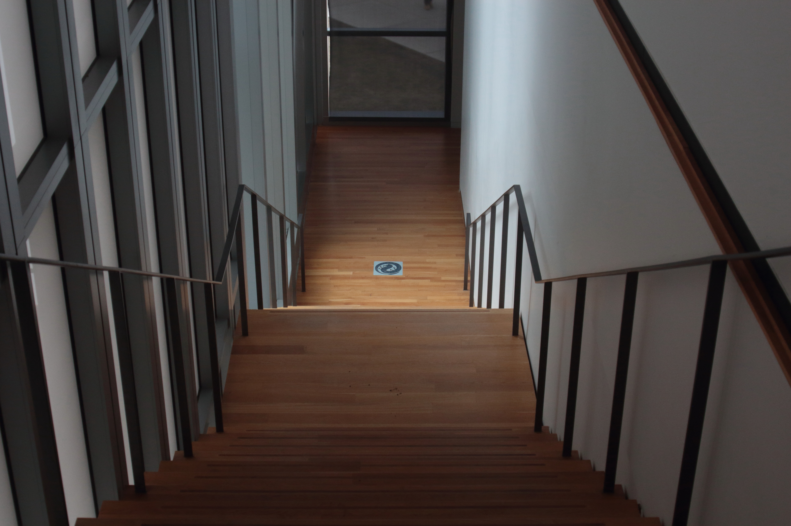
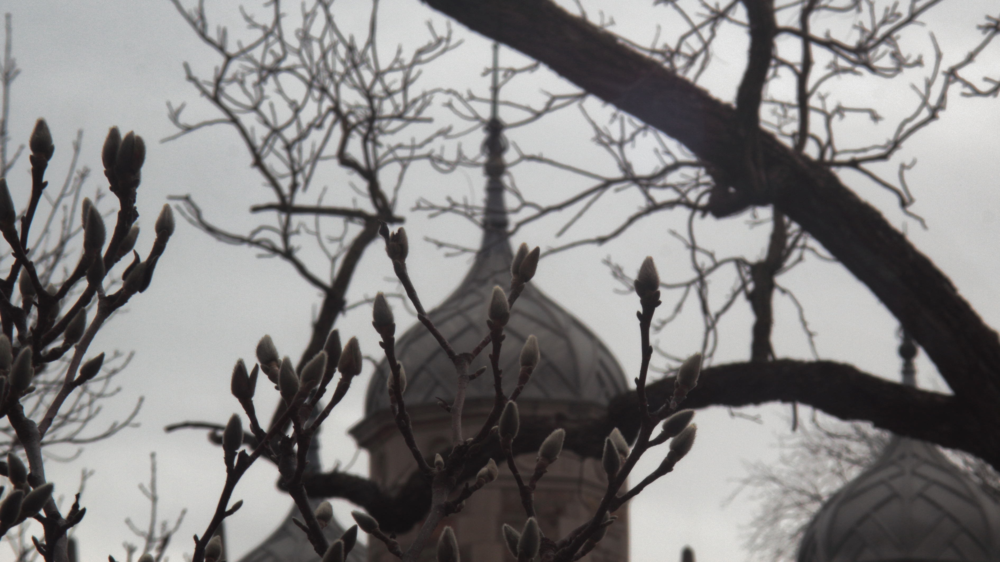

(Hint: hover over an image to see my thoughts on it)
Spotlight Pictures:
"Paper" from Second Batch

"Chlorophyllic Halo" from Second Batch

"A Museum of Art"
"Pull"
"Orb"
"Overhang"
"Grain"
 does very interesting things in low light. This is one of them.")
"Lines"

"Stairs"
"Buds"
Second Batch
"Paper"
"Octo Friend"

"Chlorophyllic Halo"

"Doge"

"Chlorophyllic Halo"
First Batch
"Argus Lens"

"Argus Poster"

"Sapling"
.")
"Cactus"

"Spire"

"Cloud(s)"

"Lid"

"P"

"Synth"
 is that one neon line on the middle right.")